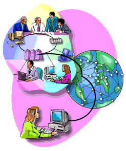

Es el protocolo que permite la transferencia de documentos web (como páginas HTML) a través de la World Wide Web. Funciona en un modelo cliente-servidor, donde el cliente solicita recursos y el servidor los entrega.
Una red es un sistema interconectado de dispositivos electronicos,como computadoras, servidores, dispositivos moviles y otros dispositivos, que se comunican entre si mediante protocolos predefinidos con el fin de intercambiar informacion eficazmente.
Las redes pueden ser tanto redes locales que conectan dispositivos dentro de un area limitada,
como redes globales, tal es el caso del internet, que abarcan todo el mundo.
PAN(Personal Area Network)
Las redes de área personal son un tipo de red de comunicaciones inalámbricas que permiten la conexión y transferencia de datos entre dispositivos cercanos, como teléfonos móviles, tabletas, computadoras portátiles, dispositivos inteligentes y otros periféricos.
se basan en tecnologías con una señal de radio de corto alcance como Bluetooth, Wi-Fi Direct o Near Field Communication (NFC).

LAN (Local Area Network)
Una LAN es una red de área local que sirve para conectar dispositivos electrónicos que comparten el mismo espacio físico, como por ejemplo una vivienda.
Las redes LAN funcionan conectando sus dispositivos a través de un router y una red centrales. Piense en dispositivos como equipos, impresoras y teléfonos como destinos y en la red como las caminos que conectan estos destinos.
CAN (Campus Area Network)
Una red de área de campus es una red que abarca un área geográfica limitada. Las CAN interconectan varias redes de área local (LAN) dentro de un campus educativo o corporativo. La mayoría de las CAN se conectan a la Internet pública.
Las instalaciones corporativas lo suficientemente grandes como para que se las considere un "campus" también pueden operar con CAN para los mismos fines.
MAN (Metropolitan Area Network)
Una red MAN es una infraestructura de comunicación que abarca un área geográfica más amplia que una red LAN pero más pequeña que una red WAN.
Las redes MAN se utilizan para conectar múltiples ubicaciones dentro de una ciudad o área metropolitana, permitiendo la transferencia de datos y la comunicación eficiente entre ellas.
Las MAN pueden ampliarse hasta 100 kilómetros y, por lo tanto, también son posibles en áreas rurales.
WAN (Wide Area Network)
Es una red informática que conecta redes más pequeñas. Una WAN es esencialmente una red de redes extendida en un área geográfica amplia.
Dado que las redes WAN no están vinculadas a una ubicación específica, estas permiten que las redes pequeñas (como pueden ser redes LAN), que se encuentran separadas a grandes distancias, se comuniquen entre sí para el intercambio de información, siendo Internet la WAN más grande del mundo.

PROTOCOLOS DE RED

Los protocolos de red son conjuntos de reglas y estándares que permiten la comunicación entre dispositivos en una red de computadoras.Estos protocolos establecen la forma en que se transmiten, reciben, procesan y entregan los datos en una red, así como también cómo se detectan y corrigen los errores de transmisión.
Existen varios tipos de protocolos de red que se utilizan en la comunicación de dispositivos en una red. Algunos de los protocolos más comunes son:
HTTP
FTP
Es un protocolo para la transferencia de archivos entre un cliente y un servidor. FTP permite descargar o subir archivos desde y hacia un servidor de manera segura o no segura.
TCP/IP

Son protocolos que definen cómo los datos se envían y reciben en una red. TCP se encarga de asegurar que los datos lleguen completos y en el orden correcto, mientras que IP se encarga de dirigir los paquetes de datos al destino correcto.
DNS
Es el protocolo que traduce nombres de dominio (como www.ejemplo.com) en direcciones IP que los sistemas de red utilizan para localizar y acceder a sitios web.
SMTP
Protocolo utilizado para el envío de correos electrónicos a través de redes. SMTP define cómo los correos electrónicos deben enviarse desde el cliente hasta el servidor de correo y luego a otros servidores de destino.
POP3

Protocolo para recibir correos electrónicos, que descarga los correos del servidor al dispositivo local y, por lo general, los elimina del servidor.
HTTPS
Es una versión segura de HTTP, que utiliza encriptación SSL/TLS para proteger la transferencia de datos entre el cliente y el servidor. Garantiza la privacidad y seguridad de los datos transmitidos.
Las topologías de red se refieren a la disposición física o lógica de los dispositivos y conexiones en una red de computadoras.
El diseño de la red puede influir en su rendimiento, escalabilidad y gestión. A continuación, se describen algunas de las topologías más comunes:
TOPOLOGIA DE BUS
Estan coectados a un circuito comun(bus).
La informacion que se envia de una PC a otra viaja directa o indirectamente, si una PC falla, la comunicacion se mantiene, no sucede lo mismo si el bus es el que falla.
El tipo de cableado que se usa puede ser coaxial, par trenzado o fibra optica.
TOPOLOGIA DE ESTRELLA
Red en la cual las estaciones estan conectadas directamente a un punto central y todas las comunicaciones se hacen necesariamente atraves de este.
La mayoria de las redes tienen un enrutador(router), un conmutador(switch) o un concentrador(hub) por el que pasa todos los paquetes en esta topologia.
VENTAJAS
DESVENTAJAS
TOPOLOGIA DE MALLA
Red donde cada nodo esta conectado a todos los nodos. Es posible llevar los mensajes atraves de diferentes caminos, no puede existir absolutamente ninguna interrupcion en las comunicaciones.
Estan conectados todos con todos, mediante cables separados.
La red puede funcionar incluso cuando un nodo desaparece o falla ya que el resto de los nodos evitan el paso por ese punto.
VENTAJAS
DESVENTAJAS
TOPOLOGIA DE ARBOL
Red en la cual por su topologia todos los nodos o computadoras estan colocados en forma de arbol.

VENTAJAS
DESVENTAJAS
TOPOLOGIA DE ANILLO
En esta red la comunicacion se da por el paso de un toque o un testigo que se puede conceptualizar como un cartero que pasa recogiendo y recibiendo paquetes.
De esta manera se evitan eventuales perdidas de la informacion.